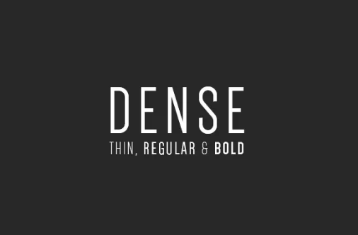
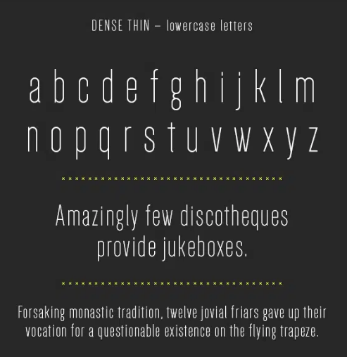
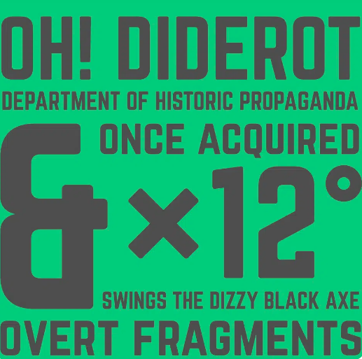
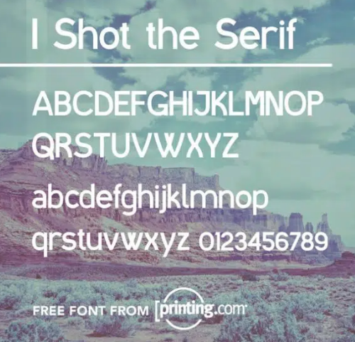

Ressources
typographiques
gratuites pour
le web et le print !Je vous propose quelques ressources typographiques gratuites pour vos projets Web ou Print ! Ne négligez jamais le choix de vos polices pour vos projets.
La police « Dense »
La police « Dense » « Dense » est une police gratuite pour un usage commercial et personnel mais uniquement dans la version regular !
 
Le lien pour télécharger la version gratuite de la police
La police « Norwester »
La police « Dense » « Norwester » est une police de type « sans serif » gratuite, mais attention cette police n’est disponible quand uppercase (majuscule) et ne prend pas en charges les accents !

Le lien pour télécharger la version gratuite de la police
La police « I shot the Serif »
« I shot the Serif » est une police de type « sans serif » totalement gratuite

Le lien pour télécharger la version gratuite de la police
h2>La police « GRN Burgy » « GRN Burgy » est une police assez originale. Parfait pour la création de #logo des fast-foods !
Le lien pour télécharger la version gratuite de la police